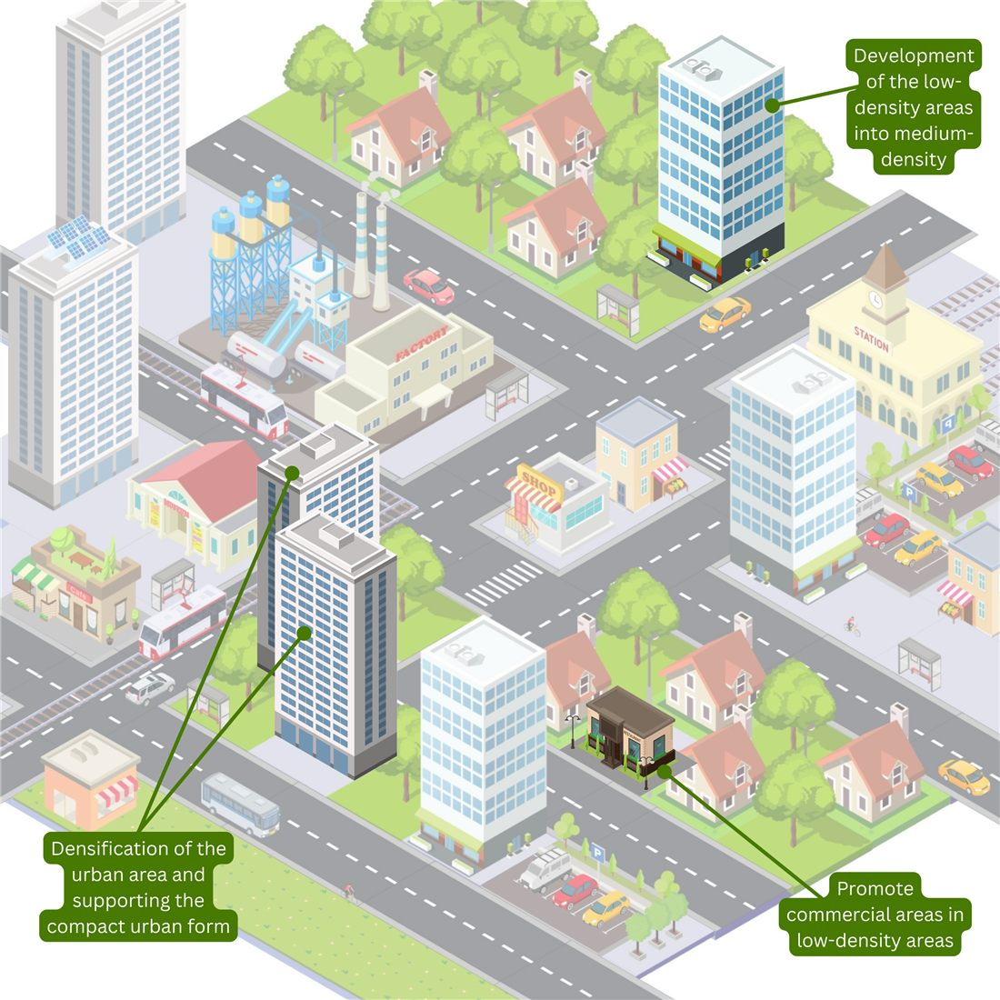
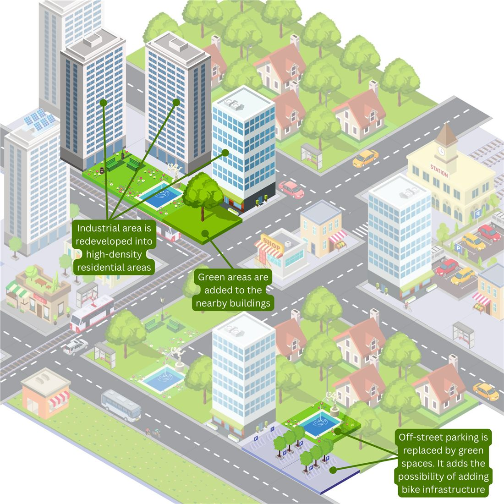
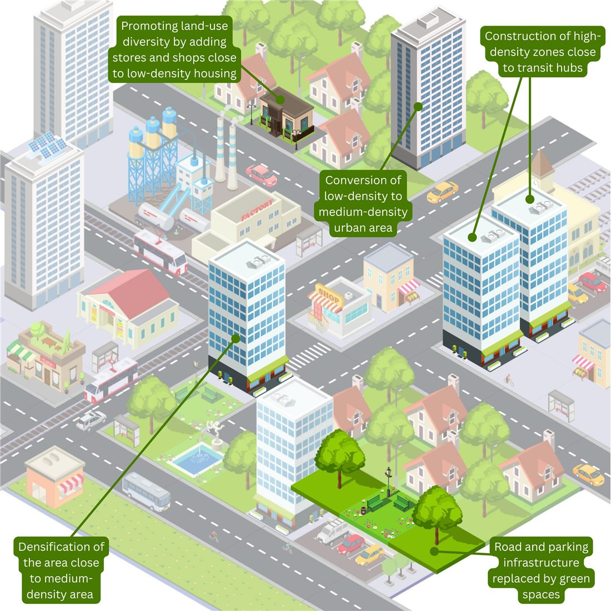

TOD Explorer
A free web game · from my MSc thesis
What if your city grew around its train stations?
Turn any place in Europe into a cube city, pick a policy, and watch it grow to 2050.
Swipe →
TOD Explorer2 / 8
It started with Rome.
For my master's thesis at the University of Twente, I modelled how Rome could grow by 2050 under three Transit-Oriented Development strategies.

Intense BuildingTaller homes and local shops around the stations

RetrofittingIndustry, parking and roads become homes and green space

BalancedA bit of both: moderate density, mixed use, greener streets
One question stayed with me: what would this look like in other cities? So I turned it into a game.
Illustrations: Anastasia Logvinenko
TOD Explorer3 / 8
1Pick a place
2Set the growth
Search any place in Europe. Free open data builds it in seconds: buildings and land use from OpenStreetMap, people from the EU Census 2021, growth from Eurostat's projection to 2050.

TOD Explorer4 / 8
3Pick a policy, press Play
Each year the newcomers need homes. The policy decides where they go: near stations first, then on new land.
BaselineIntense BuildingRetrofittingBalancedCustom

New land use
New urban green
Growth on new land
Homes retrofitted
TOD Explorer5 / 8
4Add new stations
Place them yourself, or let the game put them where the city will grow. Then go back: your stations stay, and TOD growth moves towards them.

TOD Explorer6 / 8
5See what changed
CO₂ per resident, residents near transit, homes, and a score on the TOD Standard (ITDP): the six principles open data can measure.
TOD Explorer7 / 8
The numbers don't always agree.
When I tested Utrecht with the Balanced policy, against Baseline in 2050:
CO₂ per resident1.64 t/yr▼ 81 kg less
Housing capacity147,862▼ 1,036 fewer people
Lower emissions per person, but room for fewer people. Sustainable cities are full of trade-offs like this, and I think seeing them helps more than hiding them.
A what-if from open data, not a forecast.
TOD Explorer8 / 8
Try it with your city.
raverino.github.io/TOD_ExplorerFree · no sign-up · works on your phone
Share your result with #CityOfTheFuture. I would love to see which city you picked.
Based on Dimas (2025), Modeling Transit-Oriented Development, University of Twente. Visual style after Anastasia Logvinenko. Data © OpenStreetMap contributors, EU Census 2021, Eurostat EUROPOP2023. TOD Standard: ITDP (2017).